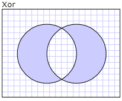

Общие сведения о классе Geometry
В этом обзоре описывается использование Windows Presentation Foundation (WPF) Geometry классов для описания фигур. В этом разделе также приведены различия между Geometry объектов и Shape элементов.
Что такое класс Geometry?
Geometry Класс и классы, производные от него, такие как EllipseGeometry, PathGeometry, и CombinedGeometry, позволяют описывать геометрию двумерной фигуры. Данные геометрические описания имеют множество применений, например определение фигуры для рисования на экране или определение областей проверки нажатия и областей обрезки. Геометрию можно даже использовать для определения пути анимации.
Geometry объекты могут быть простыми, такими как прямоугольники и круги или сложными, созданными из двух или более геометрических объектов. Более сложные геометрические объекты могут быть созданы с помощью PathGeometry и StreamGeometry классы, которые позволяют описывать дуги и кривые.
Так как Geometry — это разновидность Freezable, Geometry объекты предоставляют ряд специальных возможностей: их можно объявлять как ресурсы, общие для нескольких объектов, делать доступными только для чтения с целью повышения производительности, клонировать, и делать потокобезопасными. Дополнительные сведения о различных возможностях, предоставляемых Freezable объектов, см. в разделе Freezable Общие сведения об объектах.
Геометрические объекты и Фигур
Geometry И Shape классы похожи тем, что они описывают двумерные фигуры (сравнить EllipseGeometry и Ellipse например), однако существуют важные различия.
Например Geometry класс наследует от Freezable класс при Shape класс наследует от FrameworkElement. Так как они являются элементами, Shape объекты могут отображаться сами и участвовать в системе макета, хотя Geometry объектов невозможно.
Несмотря на то что Shape объекты являются легче работать, чем Geometry объектов, Geometry объекты являются более гибкими. Хотя Shape объект используется для отрисовки двумерной графики, Geometry объект можно использовать для определения геометрической области для двумерной графики, определения области обрезки или определить область для проверки нажатия, например.
Форма контура
Один Shape, Path классом, фактически Geometry для описания своего содержимого. Установив Data свойство Path с Geometry и задав его Fill и Stroke свойства, можно отображать Geometry.
Общие свойства, принимающие объект класса Geometry
В предыдущих разделах упоминалось, что объекты класса Geometry могут использоваться с другими объектами для различных целей, например для рисования фигур, анимации и обрезки. В следующей таблице перечислены несколько классов, имеющих свойства, принимающие Geometry объекта.
| Тип | Свойство |
|---|---|
| DoubleAnimationUsingPath | PathGeometry |
| DrawingGroup | ClipGeometry |
| GeometryDrawing | Geometry |
| Path | Data |
| UIElement | Clip |
Простые геометрические типы
Базовый класс для всех геометрических объектов является абстрактным классом Geometry. Классы, которые являются производными от Geometry класса можно условно разделить на три категории: простые геометрические объекты, геометрические объекты пути и составные геометрические объекты.
Простые геометрические классы включают LineGeometry, RectangleGeometry, и EllipseGeometry и используются для создания простых геометрических фигур, таких как линии, прямоугольники и круги.
Объект LineGeometry определяется путем указания начальной точки строки, а также конечную точку.
Объект RectangleGeometry определяется с помощью Rect структуры, указывающий его относительное положение, высоту и ширину. Можно создать прямоугольник с закругленными углами, установив RadiusX и RadiusY свойства.
EllipseGeometry Определяется центральной точки, радиус по оси x и y радиус. Следующие примеры показывают, как создать простые геометрические объекты для отображения и для обрезки.
Эти же фигуры, а также более сложные фигуры, могут создаваться с использованием PathGeometry или путем объединения геометрических объектов, но эти классы предоставляют более простые средства для создания таких простых геометрических фигур.
В следующем примере показано, как создать и отобразить LineGeometry. Как отмечалось ранее, Geometry объекта не может нарисовать сам себя, поэтому в примере используется Path фигуру для отображения линии. Поскольку линия не имеет площади, задание Fill свойство Path не имеет смысла; вместо этого только Stroke и StrokeThickness указаны свойства. На следующем рисунке показан результат выполнения этого примера.

Объект LineGeometry, соединяющий точки (10,20) и (100,130)
<Path Stroke="Black" StrokeThickness="1" >
<Path.Data>
<LineGeometry StartPoint="10,20" EndPoint="100,130" />
</Path.Data>
</Path>
LineGeometry myLineGeometry = new LineGeometry();
myLineGeometry.StartPoint = new Point(10,20);
myLineGeometry.EndPoint = new Point(100,130);
Path myPath = new Path();
myPath.Stroke = Brushes.Black;
myPath.StrokeThickness = 1;
myPath.Data = myLineGeometry;
Warning
It looks like the sample you are looking for does not exist.
В следующем примере показано, как создать и отобразить EllipseGeometry. Примеры устанавливают Center из EllipseGeometry укажите точки 50,50 а радиус по оси x и y радиус задаются равными 50, результате создается круг диаметром 100. Внутреннюю часть эллипса закрашивается путем присвоения значения для свойства Fill элемента Path, в данном случае Gold. На следующем рисунке показан результат выполнения этого примера.
Объект EllipseGeometry, нарисованный в точке (50,50)
<Path Fill="Gold" Stroke="Black" StrokeThickness="1">
<Path.Data>
<EllipseGeometry Center="50,50" RadiusX="50" RadiusY="50" />
</Path.Data>
</Path>
EllipseGeometry myEllipseGeometry = new EllipseGeometry();
myEllipseGeometry.Center = new Point(50, 50);
myEllipseGeometry.RadiusX = 50;
myEllipseGeometry.RadiusY = 50;
Path myPath = new Path();
myPath.Fill = Brushes.Gold;
myPath.Stroke = Brushes.Black;
myPath.StrokeThickness = 1;
myPath.Data = myEllipseGeometry;
Warning
It looks like the sample you are looking for does not exist.
В следующем примере показано, как создать и отобразить RectangleGeometry. Положение и размеры прямоугольника определяются Rect структуры. Положение — 50,50, высота и ширина — 25. В результате получается квадрат. На следующем рисунке показан результат выполнения этого примера.
Объект RectangleGeometry, нарисованный в точке 50,50
<Path Fill="LemonChiffon" Stroke="Black" StrokeThickness="1">
<Path.Data>
<RectangleGeometry Rect="50,50,25,25" />
</Path.Data>
</Path>
RectangleGeometry myRectangleGeometry = new RectangleGeometry();
myRectangleGeometry.Rect = new Rect(50,50,25,25);
Path myPath = new Path();
myPath.Fill = Brushes.LemonChiffon;
myPath.Stroke = Brushes.Black;
myPath.StrokeThickness = 1;
myPath.Data = myRectangleGeometry;
Warning
It looks like the sample you are looking for does not exist.
В следующем примере показано, как использовать EllipseGeometry качестве области обрезки для изображения. Image Объект определяется с помощью Width 200 и Height 150. EllipseGeometry С RadiusX значение 100, RadiusY значение 75 и Center присваивается значение 100,75 Clip свойства изображения. Будет отображаться только часть изображения, находящаяся внутри эллипса. На следующем рисунке показан результат выполнения этого примера.
Использование объекта EllipseGeometry для обрезки элемента управления Image
<Image
Source="sampleImages\Waterlilies.jpg"
Width="200" Height="150" HorizontalAlignment="Left">
<Image.Clip>
<EllipseGeometry
RadiusX="100"
RadiusY="75"
Center="100,75"/>
</Image.Clip>
</Image>
// Create the image to clip.
Image myImage = new Image();
Uri imageUri =
new Uri(@"C:\\Documents and Settings\\All Users\\Documents\My Pictures\\Sample Pictures\\Water lilies.jpg", UriKind.Relative);
myImage.Source = new BitmapImage(imageUri);
myImage.Width = 200;
myImage.Height = 150;
myImage.HorizontalAlignment = HorizontalAlignment.Left;
// Use an EllipseGeometry to define the clip region.
EllipseGeometry myEllipseGeometry = new EllipseGeometry();
myEllipseGeometry.Center = new Point(100, 75);
myEllipseGeometry.RadiusX = 100;
myEllipseGeometry.RadiusY = 75;
myImage.Clip = myEllipseGeometry;
Warning
It looks like the sample you are looking for does not exist.
Геометрические объекты-контуры
PathGeometry Класс и его облегченный эквивалент StreamGeometry класса, предоставляют средства для описания сложных фигур состоящие из дуг, кривых и линий.
В сердце PathGeometry — это коллекция PathFigure объекты названы так, как каждая фигура описывает дискретную форму так, PathGeometry. Каждый PathFigure состоит из одного или нескольких PathSegment объектов, каждый из которых описывает сегмент фигуры.
Существует несколько типов сегментов.
| Тип сегмента | Описание | Пример |
|---|---|---|
| ArcSegment | Создает эллиптическую дугу между двумя точками. | Создание эллиптической дуги. |
| BezierSegment | Создает кривую Безье третьего порядка между двумя точками. | Создание кривой Безье третьего порядка. |
| LineSegment | Создает линию между двумя точками. | Создание LineSegment в PathGeometry |
| PolyBezierSegment | Создает набор кривых Безье третьего порядка. | См. в разделе PolyBezierSegment страница "тип". |
| PolyLineSegment | Создает набор линий. | См. в разделе PolyLineSegment страница "тип". |
| PolyQuadraticBezierSegment | Создает набор кривых Безье второго порядка. | См. в разделе PolyQuadraticBezierSegment страницы. |
| QuadraticBezierSegment | Создает кривую Безье второго порядка. | Создание кривой Безье второго порядка. |
Сегменты PathFigure объединяются в одну геометрическую форму конечную точку сегмента как начальную точку следующего сегмента. StartPoint Свойство PathFigure указывает точку, от которой рисуется первый сегмент. Каждый последующий сегмент начинается в конечной точке предыдущего сегмента. Например, вертикальная линия от 10,50 для 10,150 может быть определена путем задания StartPoint свойства 10,50 и создание LineSegment с Point значение свойства 10,150.
В следующем примере создается простой PathGeometry из одной PathFigure с LineSegment и отображается с использованием Path элемент. PathFigure Объекта StartPoint присваивается 10,20 и LineSegment определен с конечной точкой 100,130. На следующем рисунке показано PathGeometry созданный в этом примере.
Контур PathGeometry, содержащий один LineSegment
<Path Stroke="Black" StrokeThickness="1">
<Path.Data>
<PathGeometry>
<PathGeometry.Figures>
<PathFigure StartPoint="10,20">
<PathFigure.Segments>
<LineSegment Point="100,130"/>
</PathFigure.Segments>
</PathFigure>
</PathGeometry.Figures>
</PathGeometry>
</Path.Data>
</Path>
// Create a figure that describes a
// line from (10,20) to (100,130).
PathFigure myPathFigure = new PathFigure();
myPathFigure.StartPoint = new Point(10,20);
myPathFigure.Segments.Add(
new LineSegment(new Point(100,130),
true /* IsStroked */ ));
/// Create a PathGeometry to contain the figure.
PathGeometry myPathGeometry = new PathGeometry();
myPathGeometry.Figures.Add(myPathFigure);
// Display the PathGeometry.
Path myPath = new Path();
myPath.Stroke = Brushes.Black;
myPath.StrokeThickness = 1;
myPath.Data = myPathGeometry;
Warning
It looks like the sample you are looking for does not exist.
Стоит сравнить этот пример с предыдущим LineGeometry пример. Синтаксис, используемый для PathGeometry является гораздо более подробным, отличный от используемого для простого LineGeometry, и может быть целесообразнее использовать LineGeometry класса таким образом, но подробный синтаксис PathGeometry позволяет очень сложными и сложные геометрические области.
Более сложные геометрические объекты могут быть созданы с помощью сочетания PathSegment объектов.
В следующем примере используется BezierSegment, LineSegmentи ArcSegment для создания фигуры. В примере сначала создается кривая Безье третьего порядка путем задания четырех точек: начальной точки, который является конечной точкой предыдущего сегмента, конечной точки (Point3), и двух контрольных точек (Point1 и Point2). Две контрольные точки кривой Безье третьего порядка ведут себя как магниты, притягивая к себе то, что без них было бы прямой линией. В результате получается кривая. Первая контрольная точка, Point1, влияет на начало кривой; вторая контрольная точка, Point2, влияет на конечную часть кривой.
Затем в примере добавляется LineSegment, который отрисовывается конечную точку предыдущего BezierSegment ей, предшествующую точку, заданную ее LineSegment свойство.
Затем в примере добавляется ArcSegment, который отрисовывается из конечной точки предыдущего LineSegment точку, заданную ее Point свойство. В примере также указывается x - и y Радиус дуги (Size), угол поворота (RotationAngle), флаг, указывающий, насколько большим должен быть угол дуги (IsLargeArc) и значение, указывающее направление, в котором рисуется дуга (SweepDirection). На следующей иллюстрации показана фигура, полученная в результате выполнения этого примера.
Объект PathGeometry
<Path Stroke="Black" StrokeThickness="1" >
<Path.Data>
<PathGeometry>
<PathGeometry.Figures>
<PathFigure StartPoint="10,50">
<PathFigure.Segments>
<BezierSegment
Point1="100,0"
Point2="200,200"
Point3="300,100"/>
<LineSegment Point="400,100" />
<ArcSegment
Size="50,50" RotationAngle="45"
IsLargeArc="True" SweepDirection="Clockwise"
Point="200,100"/>
</PathFigure.Segments>
</PathFigure>
</PathGeometry.Figures>
</PathGeometry>
</Path.Data>
</Path>
// Create a figure.
PathFigure myPathFigure = new PathFigure();
myPathFigure.StartPoint = new Point(10,50);
myPathFigure.Segments.Add(
new BezierSegment(
new Point(100,0),
new Point(200,200),
new Point(300,100),
true /* IsStroked */ ));
myPathFigure.Segments.Add(
new LineSegment(
new Point(400,100),
true /* IsStroked */ ));
myPathFigure.Segments.Add(
new ArcSegment(
new Point(200,100),
new Size(50,50),
45,
true, /* IsLargeArc */
SweepDirection.Clockwise,
true /* IsStroked */ ));
/// Create a PathGeometry to contain the figure.
PathGeometry myPathGeometry = new PathGeometry();
myPathGeometry.Figures.Add(myPathFigure);
// Display the PathGeometry.
Path myPath = new Path();
myPath.Stroke = Brushes.Black;
myPath.StrokeThickness = 1;
myPath.Data = myPathGeometry;
Warning
It looks like the sample you are looking for does not exist.
Еще более сложные геометрические объекты могут создаваться с использованием нескольких PathFigure объектов в рамках PathGeometry.
В следующем примере создается PathGeometry с двумя PathFigure объектов, каждый из которых содержит несколько PathSegment объектов. PathFigure Из приведенного выше примера и PathFigure с PolyLineSegment и QuadraticBezierSegment используются. Объект PolyLineSegment определяется массивом точек и QuadraticBezierSegment определяется с помощью точки управления и конечной точки. На следующей иллюстрации показана фигура, полученная в результате выполнения этого примера.
Объект PathGeometry из нескольких фигур
<Path Stroke="Black" StrokeThickness="1" >
<Path.Data>
<PathGeometry>
<PathGeometry.Figures>
<PathFigure StartPoint="10,50">
<PathFigure.Segments>
<BezierSegment
Point1="100,0"
Point2="200,200"
Point3="300,100"/>
<LineSegment Point="400,100" />
<ArcSegment
Size="50,50" RotationAngle="45"
IsLargeArc="True" SweepDirection="Clockwise"
Point="200,100"/>
</PathFigure.Segments>
</PathFigure>
<PathFigure StartPoint="10,100">
<PathFigure.Segments>
<PolyLineSegment Points="50,100 50,150" />
<QuadraticBezierSegment Point1="200,200" Point2="300,100"/>
</PathFigure.Segments>
</PathFigure>
</PathGeometry.Figures>
</PathGeometry>
</Path.Data>
</Path>
PathGeometry myPathGeometry = new PathGeometry();
// Create a figure.
PathFigure pathFigure1 = new PathFigure();
pathFigure1.StartPoint = new Point(10,50);
pathFigure1.Segments.Add(
new BezierSegment(
new Point(100,0),
new Point(200,200),
new Point(300,100),
true /* IsStroked */ ));
pathFigure1.Segments.Add(
new LineSegment(
new Point(400,100),
true /* IsStroked */ ));
pathFigure1.Segments.Add(
new ArcSegment(
new Point(200,100),
new Size(50,50),
45,
true, /* IsLargeArc */
SweepDirection.Clockwise,
true /* IsStroked */ ));
myPathGeometry.Figures.Add(pathFigure1);
// Create another figure.
PathFigure pathFigure2 = new PathFigure();
pathFigure2.StartPoint = new Point(10,100);
Point[] polyLinePointArray =
new Point[]{ new Point(50, 100), new Point(50, 150)};
PolyLineSegment myPolyLineSegment = new PolyLineSegment();
myPolyLineSegment.Points =
new PointCollection(polyLinePointArray);
pathFigure2.Segments.Add(myPolyLineSegment);
pathFigure2.Segments.Add(
new QuadraticBezierSegment(
new Point(200,200),
new Point(300,100),
true /* IsStroked */ ));
myPathGeometry.Figures.Add(pathFigure2);
// Display the PathGeometry.
Path myPath = new Path();
myPath.Stroke = Brushes.Black;
myPath.StrokeThickness = 1;
myPath.Data = myPathGeometry;
Warning
It looks like the sample you are looking for does not exist.
StreamGeometry
Как и PathGeometry класса StreamGeometry определяет сложную геометрическую форму, которая может содержать кривые, дуги и линии. В отличие от PathGeometry, содержимое StreamGeometry не поддерживают привязку данных, анимацию или изменения. Используйте StreamGeometry для описания сложной геометрии, но не требуется поддержка привязки данных, анимации или изменения. Из-за своей эффективности StreamGeometry класс хорошо подходит для описания графических элементов.
Пример см. в разделе Создание фигуры с помощью класса StreamGeometry.
Синтаксис разметки пути
PathGeometry И StreamGeometry типы поддержки Язык XAML синтаксис, с помощью специальных последовательностей перемещения атрибута и команд рисования. Дополнительные сведения см. в разделе Синтаксис разметки пути.
Составные геометрические объекты
Составные геометрические объекты могут создаваться с использованием GeometryGroup, CombinedGeometry, или путем вызова статического Geometry метод Combine.
CombinedGeometry Объекта и Combine метод выполняет логическую операцию объединения областей, определенных двумя геометрическими. Geometry объекты, не имеющие площади, отбрасываются. Только два Geometry объекты могут быть объединены (несмотря на то, что эти два геометрических объекта также могут быть составными).
GeometryGroup Класс создает объединением Geometry объектов без объединения их областей. Любое количество Geometry объекты могут быть добавлены к GeometryGroup. Пример см. в разделе Создание составной фигуры.
Так как они не выполняют операцию объединения, используя GeometryGroup объектов дает выигрыш в производительности по сравнению с использованием CombinedGeometry объектов или Combine метод.
Объединенные геометрические объекты
В предыдущем подразделе упоминалось CombinedGeometry объекта и Combine метод объединения области, определяемой геометрические объекты, они содержат. GeometryCombineMode Перечисление указывает способ комбинирования геометрий. Возможные значения GeometryCombineMode свойства: Union, Intersect, Exclude, и Xor.
В следующем примере CombinedGeometry определяется с режимом объединения Union. Оба Geometry1 и Geometry2 определяются как круги одного радиуса, но со смещением центров на 50.
<Path Stroke="Black" StrokeThickness="1" Fill="#CCCCFF">
<Path.Data>
<!-- Combines two geometries using the union combine mode. -->
<CombinedGeometry GeometryCombineMode="Union">
<CombinedGeometry.Geometry1>
<EllipseGeometry RadiusX="50" RadiusY="50" Center="75,75" />
</CombinedGeometry.Geometry1>
<CombinedGeometry.Geometry2>
<EllipseGeometry RadiusX="50" RadiusY="50" Center="125,75" />
</CombinedGeometry.Geometry2>
</CombinedGeometry>
</Path.Data>
</Path>

В следующем примере CombinedGeometry определяется с режимом объединения Xor. Оба Geometry1 и Geometry2 определяются как круги одного радиуса, но со смещением центров на 50.
<Path Stroke="Black" StrokeThickness="1" Fill="#CCCCFF">
<Path.Data>
<!-- Combines two geometries using the XOR combine mode. -->
<CombinedGeometry GeometryCombineMode="Xor">
<CombinedGeometry.Geometry1>
<EllipseGeometry RadiusX="50" RadiusY="50" Center="75,75" />
</CombinedGeometry.Geometry1>
<CombinedGeometry.Geometry2>
<EllipseGeometry RadiusX="50" RadiusY="50" Center="125,75" />
</CombinedGeometry.Geometry2>
</CombinedGeometry>
</Path.Data>
</Path>

Дополнительные примеры см. в разделах Создание составной фигуры и Создание сочетаний геометрических объектов.
Возможности объектов Freezable
Так как он наследует от Freezable класс, Geometry предоставляет ряд специальных возможностей: Geometry объекты могут быть объявлены как ресурсы XAML, общие для нескольких объектов, делать доступными только для чтения с целью повышения производительности, клонировать и делать потокобезопасными. Дополнительные сведения о различных возможностях, предоставляемых Freezable объектов, см. в разделе Freezable Общие сведения об объектах.
Другие функции класса Geometry
Geometry Класс также предоставляет полезные служебные методы, такие как следующие:
FillContains — Определяет, содержит ли данная геометрия другой Geometry.
StrokeContains — Определяет ли Обводка Geometry содержащую указанную точку.
См. в разделе Geometry класс полный список методов.